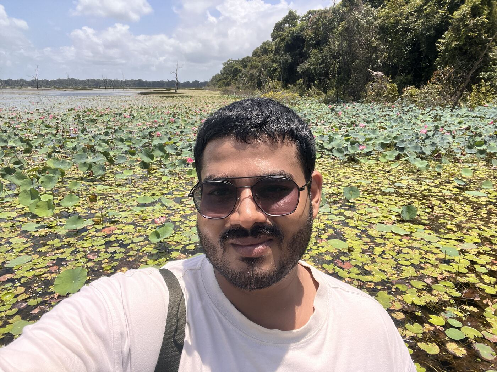
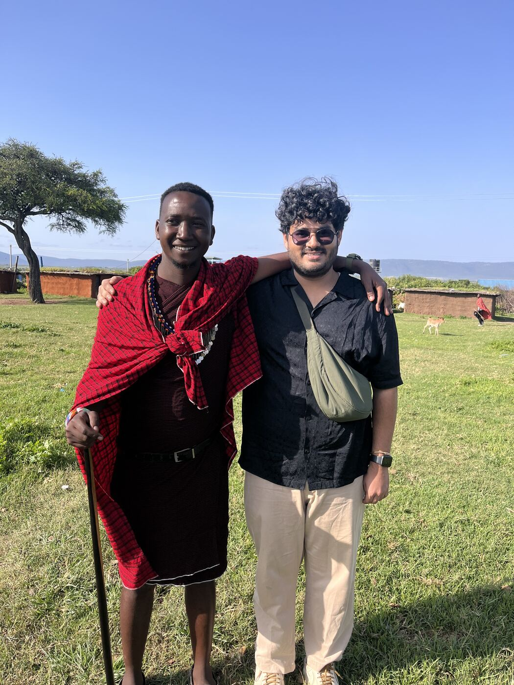

Anmol Gupta / Engineer & builder
Founding engineer.
Built to stay up.
Founding engineer. I take vague product ideas and turn them into things that stay up at 3am.
These days that means several early-stage AI products at once: hiring intelligence, legal AI, document extraction, video generation; where “the backend team” is me and a very patient terminal.
From first commit to production.
01 / In production
Selected work.
01 — YOLEX LABS / FOUNDING ENGINEER
AI work simulations and anonymous voice interviews. Real-time agents, event-sourced backends, and evaluations for the AI steps in between.
- Shipped Candoor solo in 26 days: an F#/Akka event-sourced core, a real-time voice interviewer, LLM de-identification, and an eval harness for every AI step.
- ~680ms barge-in on OpenAI Realtime with a dual-VAD design, tested head to head against LiveKit + Silero + Krisp.
- Enterprise pilots with banking, energy, and a 150K-employee IT-services firm.
F#TypeScriptOpenAI Realtime
02 — DATA AT SCALE
Distributed workers and event-driven pipelines analyzing over 5M Shopify stores, tracking changes across storefronts, products, and pricing.
- 5M+ stores tracked with snapshot versioning of storefront, product, and pricing changes over time.
- 25% higher ingestion throughput with event-driven Inngest workflows running 500+ concurrent scans.
- 50% lower storage costs after moving blobs to S3 with Gzip compression.
TypeScriptPostgresInngest
Tools of the trade
TypeScript · NestJS · React · Postgres · AWS/Pulumi
LLM pipelines that actually run in production, not just in a demo.02 / Before this
Earlier chapters.
2023 to 2024 / LOS ANGELESSundial
Founding software engineer. Built an AI assistant for solar-installation code, a Spring Boot + RabbitMQ backend with 30% faster async processing, and the GCP setup behind it.
2022 / GOOGLE SUMMER OF CODEBrought centralized identity and access management to Apache Fineract's Payment Hub with OpenID Connect, Keycloak, and Kong.
2020 to 2021 / CO-FOUNDERVoomp Technologies
Built and sold loan management systems to lenders in India: $100K+ revenue in nine months, a co-lending feature on Fineract, and 90% client retention.
2021 / PUBLICATION“Behavioral Scoring Based on Social Activity and Financial Analytics,” in Inventive Computation and Information Technologies.
MS Computer Science, Indiana University Bloomington · B.Tech IT, SRMIST Chennai · Exchange semester, Sungkyunkwan University, Seoul
03 / Elsewhere
Away from the keyboard.
I grew up in India, spent a semester in South Korea and a summer doing AI research in Taiwan, then moved to the US for my master's. After three years building across LA, Chicago, and Colorado, I moved back. 20+ countries and counting, and I ship from wherever I am.

